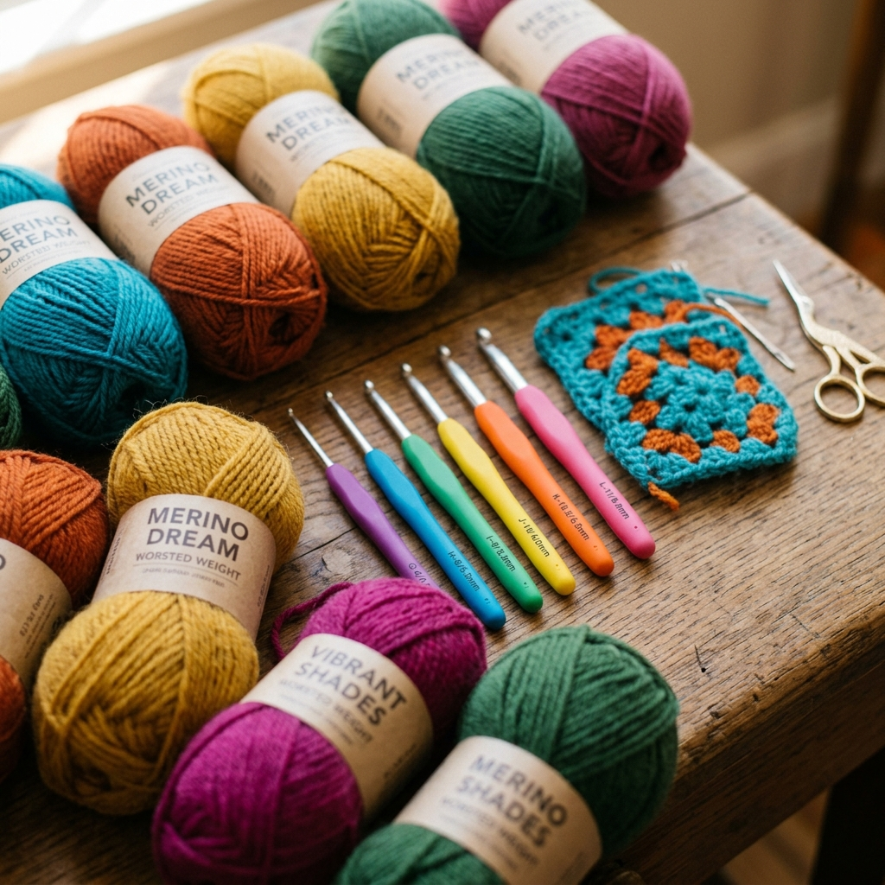

เข็มโครเชต์ (Crochet Hook) คืออุปกรณ์หัวใจของงานถักโครเชต์ การเลือกเข็มที่เหมาะสมไม่เพียงแต่ทำให้ชิ้นงานออกมาสวยงาม แต่ยังช่วยป้องกันอาการปวดมือ ปวดข้อมือ และปวดไหล่จากการถักนานๆ ได้อีกด้วย
สารบัญ
🔍 1. ส่วนประกอบของเข็มโครเชต์
| ส่วน | ชื่อ (อังกฤษ) | หน้าที่ |
|---|---|---|
| ปลายเข็ม (หัว) | Hook Tip / Point | ส่วนที่แหลมหรือมน ใช้แทงผ่านห่วง แหลม = ถักง่าย, มน = ไม่แยกเส้นด้าย |
| คอเข็ม | Throat / Groove | ร่องที่ด้ายเกาะอยู่ขณะถัก ลึก = จับด้ายดี, ตื้น = ปล่อยด้ายง่าย |
| ลำเข็ม | Shaft / Shank | ส่วนตรงกลาง กำหนดขนาดเข็มและขนาดห่วง |
| ที่จับนิ้วหัวแม่มือ | Thumb Rest / Grip | ส่วนแบนหรือนูน ช่วยจับเข็มได้มั่นคง |
| ด้ามจับ | Handle | ส่วนที่มือถือ อาจเป็นโลหะ ยาง ไม้ หรือซิลิโคน |
🛠️ 2. ประเภทเข็มแยกตามวัสดุ
🔩 อะลูมิเนียม (Aluminum)
จุดเด่น: น้ำหนักเบา ลื่นมาก ถักได้เร็ว ราคาถูก หาซื้อง่ายทุกที่
จุดด้อย: เย็นมือในอากาศหนาว ด้ามเล็กอาจปวดมือถ้าถักนาน
เหมาะกับ: มือใหม่, งานทั่วไป, ไหม Acrylic
🌳 ไม้/ไม้ไผ่ (Wood/Bamboo)
จุดเด่น: อบอุ่น เป็นธรรมชาติ ไม่ลื่นมาก ช่วยควบคุมด้ายได้ดี
จุดด้อย: อาจแตกหรือหักถ้าตกหรือใช้แรงเกิน
เหมาะกับ: ไหมลื่น (silk, bamboo) ต้องการการควบคุมสูง
🦾 เหล็ก (Steel)
จุดเด่น: แข็งแรงมาก ขนาดเล็กมาก (0.5–3.5 มม.) สำหรับงานละเอียด
จุดด้อย: เล็กมาก ถือยาก ไม่เหมาะมือใหม่
เหมาะกับ: ดอยลี่, ผ้าลูกไม้, ไหม Lace
🧬 พลาสติก/เรซิน (Plastic)
จุดเด่น: น้ำหนักเบามาก อบอุ่น ราคาถูก มีสีสันสวยงาม
จุดด้อย: อาจงอได้ถ้าใช้กับไหมแน่นมาก
เหมาะกับ: เข็มขนาดใหญ่ (6+ มม.), งานหยาบ
💎 Tunisian Crochet Hook
จุดเด่น: เข็มยาวมีขอเกี่ยวสองด้าน สำหรับลาย Tunisian เฉพาะ
จุดด้อย: ใช้เฉพาะลาย Tunisian เท่านั้น
เหมาะกับ: งาน Tunisian Crochet สไตล์คล้ายทอผ้า
🔄 Interchangeable Set
จุดเด่น: ด้ามจับเดียว เปลี่ยนหัวเข็มได้ ประหยัดต้นทุน
จุดด้อย: ราคาชุดสูง รอยต่ออาจทำให้ด้ายสะดุด
เหมาะกับ: ผู้ถักมีประสบการณ์ที่ต้องการความสะดวก
📏 3. ขนาดเข็มและระบบการวัด
เข็มโครเชต์มีระบบวัดหลายแบบในโลก เข้าใจแล้วจะไม่สับสนอีกต่อไป
| มม. (Metric) | US Size | UK Size | เหมาะกับไหม |
|---|---|---|---|
| 2.0 มม. | — | 14 | Lace, Thread |
| 2.5 มม. | B/1 หรือ C/2 | 12 | Fingering, Amigurumi Cotton |
| 3.0 มม. | D/3 | 11 | Fine/Sport |
| 3.5 มม. | E/4 | 9 | DK |
| 4.0 มม. | G/6 | 8 | DK/Worsted |
| 4.5 มม. ⭐ | 7 | 7 | Worsted — แนะนำมือใหม่ |
| 5.0 มม. | H/8 | 6 | Worsted/Aran |
| 5.5 มม. | I/9 | 5 | Aran |
| 6.0 มม. | J/10 | 4 | Bulky |
| 8.0 มม. | L/11 | 0 | Super Bulky |
| 10+ มม. | N–Q | — | Jumbo |
ระบบ US ตัวเลขมาก = เข็มใหญ่ แต่ระบบ UK ตัวเลขมาก = เข็มเล็ก ระบบ Metric (มม.) ใช้ได้สากลที่สุด แนะนำให้ยึดระบบ มม. เป็นหลัก
🎯 4. การจับคู่ขนาดเข็มกับไหมพรม
ดูจากฉลากไหมพรมก่อนเสมอ
ฉลากทุกม้วนจะระบุขนาดเข็มที่แนะนำ ใช้เป็น "จุดเริ่มต้น" ไม่ใช่กฎตายตัว เพราะมือแต่ละคนถักหนักแน่นต่างกัน
ถักชิ้นทดสอบ (Gauge Swatch) ก่อนเสมอ
ถัก sc 15 × 15 แถว วัด 10 cm กลางชิ้น ถ้าได้ค่าตรงตาม Gauge ในแพทเทิร์น ขนาดเข็มนั้นใช้ได้ ถ้าห่วงใหญ่กว่าเป้าหมายให้เปลี่ยนเป็นเข็มเล็กลง
กฎพิเศษสำหรับ Amigurumi
ถักเข็มเล็กกว่าที่ฉลากแนะนำ 1 ไซส์ เสมอ! เช่น ฉลากแนะนำ 3.5 มม. ให้ใช้ 2.5–3.0 มม. แทน เพื่อให้เนื้อผ้าแน่น ใยสังเคราะห์ไม่โผล่ออกมา
🖐️ 5. เข็ม Ergonomic — สำหรับผู้ถักบ่อย
ถ้าถักมากกว่า 2 ชั่วโมงต่อวัน การลงทุนในเข็ม Ergonomic คือสิ่งจำเป็นเพื่อป้องกัน Repetitive Strain Injury (RSI)
ด้ามจับยางซิลิโคน (Rubber Grip)
ด้ามหนาและนุ่ม ลดแรงกดทับที่นิ้วมือ ออกแบบให้จับสบาย เหมาะสำหรับผู้ที่มีอาการ Carpal Tunnel หรือข้ออักเสบ ยี่ห้อแนะนำ: Clover Amour, Tulip Etimo
ด้ามจับตามสรีระ (Anatomical Handle)
ออกแบบให้เข้ากับรูปทรงของมือ มีส่วนนูนรองรับฝ่ามือ ลดการหมุนข้อมือ ใช้กล้ามเนื้อน้อยลงในการจับ
ด้ามจับ DIY (ปั้น/พัน)
พันเทปฟองน้ำหรือผ้าพันแผลรอบด้ามเข็มปกติ ประหยัดกว่า แต่ได้ผลดีพอสมควร หรือซื้อ Polymer Clay มาหุ้มด้ามแล้วอบให้แข็ง
⚙️ 6. เข็มพิเศษสำหรับงานแต่ละประเภท
| งานประเภท | เข็มที่ใช้ | เหตุผล |
|---|---|---|
| Amigurumi | อะลูมิเนียม 2.0–2.5 มม. | เล็ก แน่น ไม่ลื่น ควบคุมดี |
| ดอยลี่ / Lace | เหล็ก 0.5–1.5 มม. | ละเอียดสุดๆ งานลูกไม้ |
| กระเป๋า Tote | 5.0–6.0 มม. | ไหมหนา ถักไว |
| Tunisian Crochet | Tunisian Hook (ยาว 30+ cm) | ถือห่วงหลายอันพร้อมกัน |
| ถักในสระน้ำ (Tapestry) | อะลูมิเนียมหัวมน | ไม่แยกเส้นด้ายขณะสอดเข็ม |
| Broomstick Lace | เข็มถัก + ไม้ขนาดใหญ่ | ลายพิเศษต้องมีอุปกรณ์คู่ |
🤲 7. เทคนิคการถือเข็มลดปวดมือ
พักทุก 30–45 นาที
วางงานและยืดนิ้วมือ ข้อมือ และไหล่ ทำ Wrist Rotation (หมุนข้อมือ) 10 ครั้ง ทั้งสองด้าน การพักสม่ำเสมอสำคัญกว่าการหยุดพักนานๆ ครั้งเดียว
ปรับ Tension ให้เหมาะ
ถ้าต้องออกแรงดึงเข็มมากเกินไป = ถักแน่นเกิน ลองใช้เข็มขนาดใหญ่ขึ้น 0.5 มม. หรือคลายมือให้หลวมขึ้น มือที่ออกแรงน้อยลงจะไม่ปวด
ท่านั่งที่ถูกต้อง
นั่งตัวตรง ข้อศอกมีที่รองรับ ไม่ยกไหล่ วางงานบนตักหรือหมอนเพื่อไม่ต้องยกแขนค้าง ถักโดยเคลื่อนข้อมือ ไม่ใช่ทั้งแขน
ออกกำลังกายนิ้วมือ
บีบลูกบอลเล็กๆ หรือแป้งโดว์ก่อนและหลังถัก ช่วยให้กล้ามเนื้อมือแข็งแรงและยืดหยุ่น ลดโอกาสบาดเจ็บในระยะยาว
🧹 8. การดูแลและทำความสะอาดเข็ม
เข็มอะลูมิเนียม
เช็ดด้วยผ้าแห้งหลังใช้ ถ้าด้ายเหนียวติดให้เช็ดด้วยผ้าชุบน้ำมันมะกอกเล็กน้อย เก็บในกระเป๋าผ้าหรือกล่อง ไม่วางปะปน เพื่อกันงอ
เข็มไม้/ไม้ไผ่
ไม่แช่น้ำ ถ้าสกปรกเช็ดด้วยผ้าชื้นแล้วเช็ดแห้งทันที ทาน้ำมันไม้ปีละครั้งเพื่อป้องกันแห้งแตก เก็บห่างจากความชื้นและความร้อน
เข็ม Ergonomic ด้ามยาง
เช็ดด้วยผ้าชื้นได้ ไม่แช่น้ำเพราะยางอาจบวมหรือเสื่อม เก็บตั้งตรงหรือนอนราบ ไม่กดทับ
🎁 9. เข็มชุดแรกแนะนำสำหรับมือใหม่
ไม่จำเป็นต้องซื้อครบทุกขนาดในครั้งเดียว เริ่มจากขนาดที่ใช้บ่อยก่อน
ชุดเริ่มต้น (งบ ~200–400 บาท):
3.5 มม. สำหรับ DK cotton
4.5 มม. ⭐ Worsted — ฝึกถักทั่วไป
5.0 มม. Worsted/Aran หนาขึ้น
ชุดขยาย (งบ ~500–800 บาท):
2.5 มม. Amigurumi Cotton
6.0 มม. กระเป๋า Tote Bulky
8.0 มม. ผ้าห่ม Super Bulky
ชุดเข็มอะลูมิเนียม 9–12 ขนาด ราคาประมาณ 150–400 บาท ในไทยหาซื้อได้ที่ Shopee, Lazada หรือร้านขายอุปกรณ์งานฝีมือ คุ้มกว่าซื้อทีละด้ามมาก
🏆 10. ยี่ห้อเข็มแนะนำ
| งบประมาณ | ยี่ห้อ | วัสดุ | จุดเด่น |
|---|---|---|---|
| ประหยัด | Susan Bates, Boye | อะลูมิเนียม | ราคาถูก ใช้งานได้ดี |
| ประหยัด | KnitPro / KnitPro Trendz | พลาสติก/อะลูมิเนียม | สีสันสวย ราคาปาน |
| ปานกลาง | Clover Soft Touch | อะลูมิเนียม + ยาง | ด้ามนุ่ม ถักนาน |
| ปานกลาง | Pony / Prym | อะลูมิเนียม | คุณภาพดี หาง่าย |
| พรีเมียม | Clover Amour ⭐ | อะลูมิเนียม + Ergonomic | ดีที่สุดในตลาด ถักนานไม่ปวด |
| พรีเมียม | Tulip Etimo | อะลูมิเนียม + ยางญี่ปุ่น | คุณภาพสูง ปลายเข็มคมพอดี |
| พรีเมียม | Furls Streamline | เรซิน/ไม้ | สวยงาม หายากในไทย |